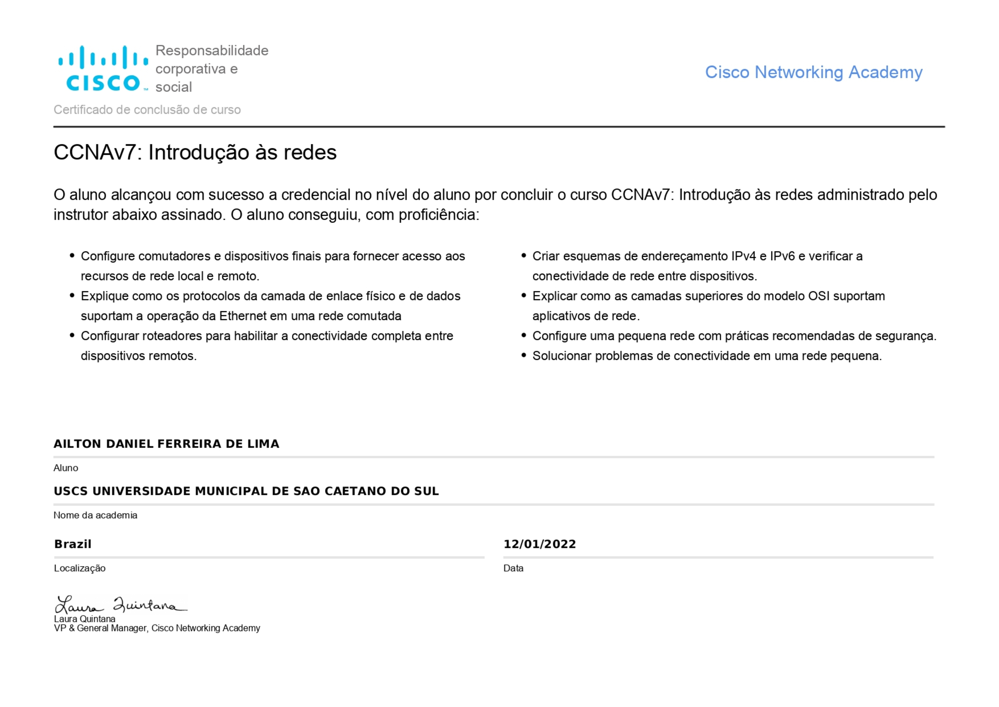

Cisco | CCNAv7: Introdução às redes
12 de Janeiro de 2022 Prezados,
Estou emocionado em compartilhar uma grande conquista pessoal: Concluí com sucesso o curso "CCNAv7: Introdução às redes" na Cisco Networking Academy!
Este certificado representa não apenas um marco em minha jornada profissional, mas também o resultado do meu compromisso e dedicação ao aprimoramento das habilidades em redes de computadores.
Estou profundamente grato pela oportunidade de adquirir conhecimentos valiosos e agradeço a todos que me apoiaram nesta jornada.
Atenciosamente,
Ailton DanielCisco | NDG Linux Unhatched
06 de Julho de 2021
Prezados,
É com imenso orgulho que compartilho com vocês uma grande conquista pessoal: Concluí com sucesso o curso NDG Linux Unhatched na renomada Cisco Networking Academy!
Este certificado representa não apenas um marco em minha jornada profissional, mas também o resultado do meu compromisso e dedicação ao aprendizado contínuo na área de Tecnologia da Informação.
Esta conquista é apenas o começo de uma jornada promissora e estou ansioso para continuar aprendendo e crescendo na minha carreira profissional.
Atenciosamente,
Ailton DanielCisco | IT Essentials
01 de Julho de 2021
Prezados,
É com grande satisfação que compartilho a notícia de que obtive com sucesso a credencial de nível de aluno ao concluir o curso IT Essentials.
Este certificado representa não apenas a conclusão de um curso, mas também o fortalecimento das minhas habilidades e conhecimentos no campo da tecnologia da informação. Estou ansioso para aplicar esses conhecimentos em futuras oportunidades e contribuir de forma significativa em projetos futuros.
Agradeço a todos que apoiaram e incentivaram minha jornada de aprendizado.
Atenciosamente,
Ailton Daniel